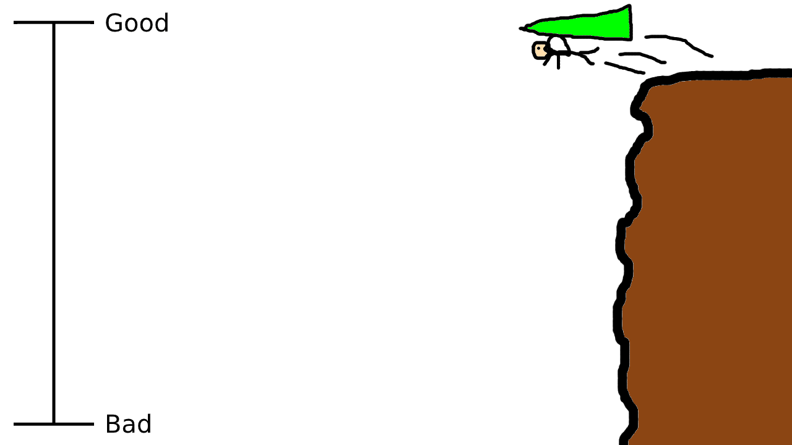
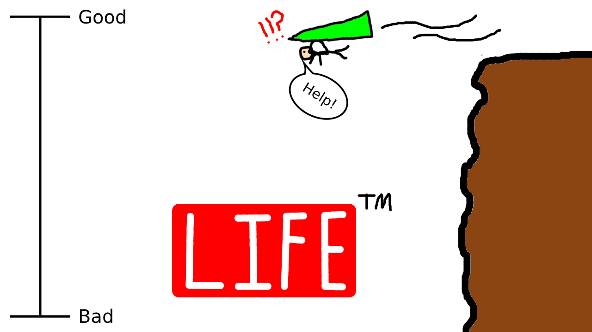
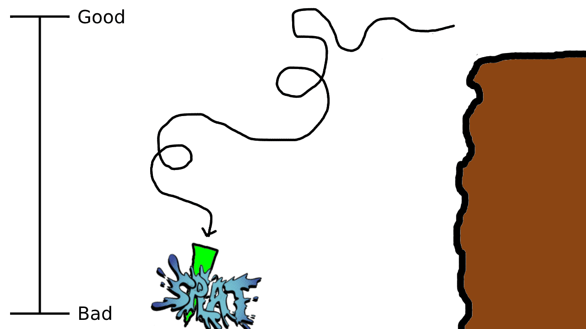
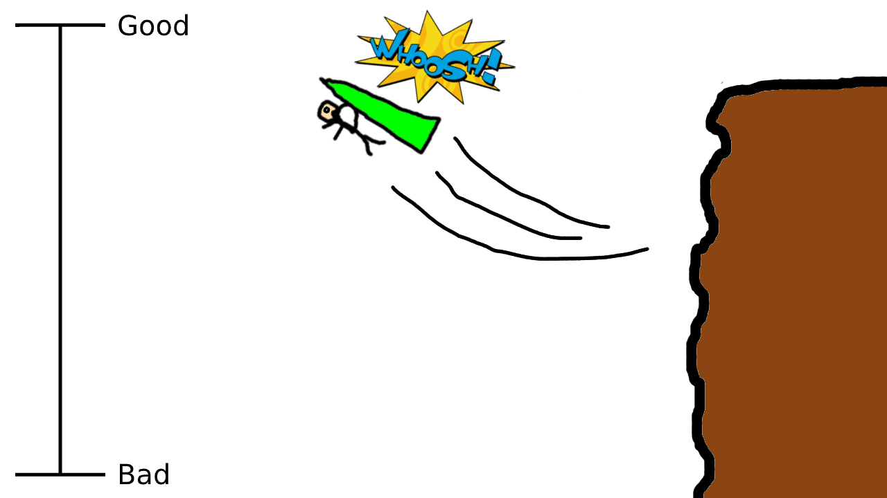

Paul Graham (the founder of Y Combinator) had this piece of advice for high school students that really stuck out to me:
“Work on things that interest you and increase your options, and worry later about which [options] you’ll take.” — Paul Graham
To explain this idea, he brought up a really interesting analogy of how to fly a glider. If you’re flying a glider, you don’t have an engine so eventually, you’re going to land. But in the meantime, you might as well keep your options open for where to land by staying as high as possible and following winds that help push you up a bit for a little bit.
That’s a good way to show why it’s preferable to keep your options open (ie. to maximise the number of choices you can make) in life, but I want to take that analogy a bit further. So here goes with my ‘Life is a Hang Glider Journey’ theory 😉
So pretend you’re launching off a cliff to fly a hang glider and the higher you are, the more amount of choices you have for where to land. This is good, as Paul Graham mentioned.
But now, let’s say your life IS that journey of flying a hang glider…
I know. Sounds like a very exciting life compared to day-to-day reality indeed 😁. When you start off in life, as a baby — that’s like when you first launch into the air. This is when you’re highest and have the most choice in life.
Think about it. You haven’t been exposed to any biases, you have as much time as you’re going to get to do [insert choice], and you haven’t decided to study the basket-weaving major in university… Overall, your options are pretty open compared to later on in your own life (although different people have a different amount of total options based on things like being lucky enough to be born in a developed country).
Now, as you go throughout life and decide to make the decisions you do (ex. learning to weave baskets) — you sacrifice some amount of choice with some decisions while gaining more choice with other ones. This is like being propelled higher by air currents vs. being pulled down by gravity. Eventually though, we’re all going to die and won’t be able to make any choices anymore because we’re dead… which is like crashing the hang glider. 😬
Now that we’ve defined the inevitable course of this ‘Life is a Hang Glider Journey’, we can start to think more about the factors in your decisions that determine whether you have more or less choice in life:
- One factor is definitely time. As you get older, you just have less time to make choices which limits the total number of choices you can make. In fact, you eventually die. This leaves you no time to make choices. 🤔Thus, several people try many intriguing plans to extend the amount of time they have in life.
- Another factor is money. If you make the decision to save $100 each month and get rich earning interest for decades… well, now you have more choice in what you can spend on! On the other hand, if you spend hundreds of dollars every year buying lottery tickets and never winning… now, you have less choice in life.
- Similarly, education also plays a role. If you make the decision to get a university degree, you have more careers you can work in. You’ll also end up earning more, so you can maximise the amount of choice you have via money too!
- What about happiness and relationships? If you have a supportive family that you can fall back on when making important decisions (ex. like making a career switch or starting a company), you have more choice in the decisions you make.
- Wait a minute…
Isn’t this just a list full of most things that EVERYONE is trying to obtain in life??? 😮
Think about what that means. People are pursuing all of these factors in life that all similarly lead to maximising the amount of choice they have. Often, people measure life in the amount of money they have, the amount of time they have, how happy they are, etc. These are like ‘currencies’ in life. But I’d argue that the real currency in life that people are pursuing is not something like money, but choice.
When we pursue these other factors in life, we maximise our choice and thus keep our hang glider higher for longer in this ‘Life as a Hang Glider’ journey. It’s like taking advantage of uplifting winds that give you more time to stay higher and maximise your choices.
This can be seen as a crude framework for how to make decisions in life — make decisions that maximise the amount of choice you have in life. Pursue the factors that keep your hang glider afloat for longer.
For instance, most people in life are confused at some point in their life about what to do during their careers. A crude way to make the decision of which path to go down is to think about which career yields more choice down the line.
- Ex. Say you were interested in art and were genuinely torn between doing an apprenticeship as a wood craftsman vs. as a painter. Well, maybe it’s better to learn about being a wood craftsman because if your artistic pursuits don’t turn out, you can apply your skills to other industries like manufacturing or construction.
This is a pretty simple question to ask yourself whenever you’re confused. Before making an important decision, think about whether this is keeping your hang glider afloat. And when a new upwind comes your way as an opportunity, seize it and maximise your options down the line. ✨
There are Always Exceptions Though…
For example, say you were learning about computer science and you couldn’t figure out which area to study. You could specialise in a specific AI technique or be a generalist in recursive algorithms. Well, learning about recursive algorithms probably maximises the number of choices you have on what you could work on, so you would decide to work on that.
That said, you might have reasonable evidence to suggest that working on the AI field might be more important in the future than working on recursive algorithms. In this case, it might make more sense to make a decision that leaves you less choice in where you work, but bring greater rewards in other areas of choice like more earnings from your work. 💸
So it’s not always a hard and fast rule to maximise choice and keep your hang glider afloat as much as possible. Especially considering the difficulties of how you don’t always know the outcomes of each decision you make when it comes to the amount of choice you have.
On the whole though, this is a pretty useful analogy to look at life with. You’re still on that hang glider right now and you’ll continue making decisions… that determine the amount of choice you’ll have for the rest of your life!!! So take the next uplifting wind. Maximise the amount of choice you have, because it’ll only be so long until the hang glider crashes and you have none left.
- Madhav Malhotra
Monday, 22-Jun-2020 01:13:18 GMT+0000